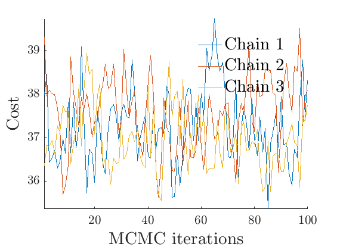

Sparse Networks with Overlapping Communities (SNetOC) package: demo_simulations
This Matlab script performs posterior inference on a (sparse) simulated graph with overlapping communities.
For downloading the package and information on installation, visit the SNetOC webpage.
Reference:
- A. Todeschini, X. Miscouridou and F. Caron (2017) Exchangeable Random Measures for Sparse and Modular Graphs with Overlapping Communities. arXiv:1602.02114.
Authors:
- A. Todeschini, Inria
- X. Miscouridou, University of Oxford
- F. Caron, University of Oxford
Tested on Matlab R2017a. Requires the Statistics toolbox.
Last Modified: 01/2020
Contents
General settings
close all clearvars tstart = clock; % Starting time istest = true; % enable testing mode: quick run with small nb of iterations root = '.'; if istest outpath = fullfile(root, 'results', 'CGGP_simulations', 'test'); else outpath = fullfile(root, 'results', 'CGGP_simulations', date); end if ~isdir(outpath) mkdir(outpath) end % Add path addpath ./GGP/ ./CGGP/ ./utils/ set(0, 'defaultAxesFontSize', 16) set(0, 'defaultTextInterpreter', 'latex'); set(0, 'defaultAxesTickLabelInterpreter', 'latex'); % Set the seed rng(22)
Sample a CGGP graph
titlenetwork = 'Simulated simple graph'; name = 'simugraph'; labels = {'Nodes', 'Nodes'}; % Set parameters of the CGGP graph p = 2; alpha_true = 200; sigma_true = 0.2; tau_true = 1; observe_all_true = false; Fdist_true.name = 'gamma'; Fdist_true.param.b = 1/p; Fdist_true.param.a = 0.2; gamma_true = zeros(p,1); obj = graphmodel('CGGP', p, alpha_true, sigma_true, tau_true, Fdist_true, gamma_true, 'undirected', observe_all_true); % Sample a CGGP graph [G, w_true, w_rem_true] = graphrnd(obj, 1e-9); nnodes = size(G, 1); nedges = nnz(G); fprintf('CGGP graph with %d nodes and %d edges sampled\n', size(G, 1), nnz(triu(G))); % shuffle nodes indperm = randperm(size(w_true,1)); w_true = w_true(indperm,:); G = G(indperm, indperm); figure('name', 'adjacency matrix') spy(G) xlabel('Nodes') ylabel('Nodes') title('Adjacency Matrix')
CGGP graph with 1268 nodes and 7930 edges sampled
% Plot the graph by sorting the nodes by max feature [~,indk] = max(w_true,[],2); [~,ind] = sort(indk, 'descend'); figure spy(G(ind, ind)) xlabel('Nodes') ylabel('Nodes') title('Sorted Adjacency Matrix')
% Plot degree distribution figure('name', 'Empirical degree distribution') hdeg = plot_degree(G); set(hdeg, 'markersize', 10, 'marker', 'o','markeredgecolor', 'none', 'markerfacecolor', [1, .75, .75]);
Prior distribution
objprior = graphmodel('CGGP', p);
Posterior inference
% Parameters of the MCMC algorithm if istest niterinit = 100; niter = 20000; nsamples = 100; % Nb of Monte Carlo samples to return ndraws = 100; else niterinit = 10000; niter = 200000; nsamples = 500; ndraws = 500; end nburn = floor(3*niter/4); nchains = 3; thin = ceil((niter-nburn)/nsamples); verbose = true; % Create the graphMCMC object objmcmc = graphmcmc(objprior, niter, 0, thin, nchains); % Note: nburn is set to zero here in order to store samples in the transient regime of the MCMC % Run initialisation init = graphinit(objmcmc, G, niterinit);
----------------------------------- Start initialisation of the MCMC algorithm for CGGP ----------------------------------- End initialisation -----------------------------------
T = 1e-3; % Run MCMC sampler objmcmc = graphmcmcsamples(objmcmc, G, verbose, init, 'T', T);
----------------------------------- Start MCMC for undirected CGGP graphs Nb of nodes: 1268x1268 - Nb of edges: 7930 (0 missing) Nb of chains: 3 - Nb of iterations: 20000 Estimated computation time: 0 hour(s) 7 minute(s) Estimated end of computation: 01-Feb-2020 17:57:09 ----------------------------------- Markov chain 1/3 ----------------------------------- i=2000 alp=143.51 sig=0.247 tau=0.98 a=0.41 0.35 b=0.94 0.67 w*=1.47 1.19 b2=0.92 0.66 alp2=142.97 rhmc=0.66 rhyp=0.51 eps=0.025 rwsd=0.02 i=4000 alp=135.02 sig=0.263 tau=0.97 a=0.33 0.31 b=0.63 0.54 w*=1.34 1.18 b2=0.61 0.52 alp2=133.82 rhmc=0.51 rhyp=0.55 eps=0.025 rwsd=0.02 i=6000 alp=160.56 sig=0.211 tau=1.26 a=0.30 0.28 b=0.64 0.52 w*=1.29 1.06 b2=0.81 0.66 alp2=168.69 rhmc=0.45 rhyp=0.57 eps=0.025 rwsd=0.02 i=8000 alp=164.70 sig=0.226 tau=1.35 a=0.26 0.26 b=0.45 0.42 w*=1.36 1.11 b2=0.61 0.57 alp2=176.22 rhmc=0.45 rhyp=0.55 eps=0.025 rwsd=0.02 i=10000 alp=123.12 sig=0.282 tau=1.37 a=0.26 0.30 b=0.37 0.49 w*=1.30 1.08 b2=0.50 0.66 alp2=134.47 rhmc=0.50 rhyp=0.57 eps=0.025 rwsd=0.02 i=12000 alp=152.43 sig=0.237 tau=1.30 a=0.25 0.25 b=0.34 0.37 w*=1.36 1.11 b2=0.45 0.49 alp2=162.25 rhmc=0.47 rhyp=0.57 eps=0.025 rwsd=0.02 i=14000 alp=145.59 sig=0.244 tau=1.06 a=0.26 0.22 b=0.41 0.33 w*=1.23 1.15 b2=0.44 0.35 alp2=147.75 rhmc=0.44 rhyp=0.57 eps=0.025 rwsd=0.02 i=16000 alp=163.92 sig=0.243 tau=1.17 a=0.22 0.22 b=0.38 0.37 w*=1.27 1.16 b2=0.45 0.43 alp2=170.38 rhmc=0.42 rhyp=0.57 eps=0.025 rwsd=0.02 i=18000 alp=140.85 sig=0.259 tau=0.96 a=0.24 0.22 b=0.44 0.32 w*=1.38 1.20 b2=0.43 0.31 alp2=139.48 rhmc=0.46 rhyp=0.57 eps=0.025 rwsd=0.02 i=20000 alp=157.80 sig=0.249 tau=0.81 a=0.23 0.23 b=0.46 0.37 w*=1.25 1.28 b2=0.37 0.30 alp2=149.82 rhmc=0.43 rhyp=0.56 eps=0.025 rwsd=0.02 ----------------------------------- Markov chain 2/3 ----------------------------------- i=2000 alp=137.35 sig=0.258 tau=0.93 a=0.35 0.31 b=0.68 0.50 w*=1.26 1.25 b2=0.64 0.47 alp2=134.82 rhmc=0.60 rhyp=0.54 eps=0.025 rwsd=0.02 i=4000 alp=131.79 sig=0.267 tau=1.05 a=0.30 0.27 b=0.48 0.38 w*=1.35 1.23 b2=0.50 0.40 alp2=133.47 rhmc=0.47 rhyp=0.57 eps=0.025 rwsd=0.02 i=6000 alp=130.18 sig=0.245 tau=0.99 a=0.29 0.27 b=0.45 0.35 w*=1.21 1.01 b2=0.45 0.35 alp2=129.84 rhmc=0.45 rhyp=0.57 eps=0.025 rwsd=0.02 i=8000 alp=128.30 sig=0.266 tau=0.93 a=0.28 0.23 b=0.45 0.33 w*=1.41 1.10 b2=0.42 0.31 alp2=125.90 rhmc=0.46 rhyp=0.56 eps=0.025 rwsd=0.02 i=10000 alp=125.54 sig=0.275 tau=1.08 a=0.27 0.22 b=0.39 0.29 w*=1.28 1.16 b2=0.42 0.31 alp2=128.30 rhmc=0.46 rhyp=0.58 eps=0.025 rwsd=0.02 i=12000 alp=122.92 sig=0.284 tau=1.15 a=0.28 0.22 b=0.53 0.24 w*=1.31 1.17 b2=0.61 0.27 alp2=128.03 rhmc=0.49 rhyp=0.57 eps=0.025 rwsd=0.02 i=14000 alp=117.72 sig=0.267 tau=1.30 a=0.27 0.20 b=0.34 0.19 w*=1.17 1.23 b2=0.44 0.25 alp2=126.13 rhmc=0.49 rhyp=0.57 eps=0.025 rwsd=0.02 i=16000 alp=123.82 sig=0.265 tau=1.41 a=0.27 0.23 b=0.28 0.24 w*=1.47 1.10 b2=0.40 0.33 alp2=135.68 rhmc=0.46 rhyp=0.57 eps=0.025 rwsd=0.02 i=18000 alp=117.33 sig=0.264 tau=1.77 a=0.23 0.20 b=0.20 0.15 w*=1.41 0.97 b2=0.36 0.27 alp2=136.47 rhmc=0.50 rhyp=0.57 eps=0.025 rwsd=0.02 i=20000 alp=116.99 sig=0.261 tau=1.94 a=0.23 0.18 b=0.22 0.15 w*=1.28 1.12 b2=0.43 0.30 alp2=139.09 rhmc=0.40 rhyp=0.59 eps=0.025 rwsd=0.02 ----------------------------------- Markov chain 3/3 ----------------------------------- i=2000 alp=121.03 sig=0.267 tau=0.77 a=0.36 0.34 b=0.57 0.55 w*=1.11 1.21 b2=0.44 0.42 alp2=112.86 rhmc=0.65 rhyp=0.52 eps=0.025 rwsd=0.02 i=4000 alp=109.81 sig=0.279 tau=0.83 a=0.31 0.33 b=0.41 0.42 w*=1.08 1.38 b2=0.34 0.35 alp2=104.25 rhmc=0.43 rhyp=0.54 eps=0.025 rwsd=0.02 i=6000 alp=99.18 sig=0.301 tau=0.84 a=0.28 0.31 b=0.33 0.38 w*=1.13 1.30 b2=0.28 0.32 alp2=94.19 rhmc=0.47 rhyp=0.58 eps=0.025 rwsd=0.02 i=8000 alp=103.69 sig=0.294 tau=0.89 a=0.28 0.28 b=0.31 0.38 w*=1.16 1.19 b2=0.28 0.34 alp2=100.27 rhmc=0.48 rhyp=0.56 eps=0.025 rwsd=0.02 i=10000 alp=102.40 sig=0.292 tau=1.01 a=0.25 0.26 b=0.26 0.32 w*=1.14 1.27 b2=0.26 0.32 alp2=102.76 rhmc=0.43 rhyp=0.58 eps=0.025 rwsd=0.02 i=12000 alp=109.63 sig=0.285 tau=1.20 a=0.25 0.23 b=0.24 0.26 w*=1.27 1.31 b2=0.29 0.31 alp2=115.45 rhmc=0.45 rhyp=0.57 eps=0.025 rwsd=0.02 i=14000 alp=122.40 sig=0.268 tau=1.31 a=0.26 0.20 b=0.29 0.21 w*=1.19 1.27 b2=0.38 0.28 alp2=131.57 rhmc=0.48 rhyp=0.58 eps=0.025 rwsd=0.02 i=16000 alp=113.57 sig=0.277 tau=1.45 a=0.25 0.20 b=0.24 0.21 w*=1.14 1.16 b2=0.35 0.30 alp2=125.91 rhmc=0.51 rhyp=0.57 eps=0.025 rwsd=0.02 i=18000 alp=115.09 sig=0.282 tau=1.48 a=0.26 0.19 b=0.24 0.18 w*=1.19 1.36 b2=0.35 0.26 alp2=128.48 rhmc=0.45 rhyp=0.58 eps=0.025 rwsd=0.02 i=20000 alp=114.65 sig=0.265 tau=1.59 a=0.23 0.17 b=0.18 0.12 w*=1.14 1.30 b2=0.28 0.19 alp2=129.56 rhmc=0.44 rhyp=0.58 eps=0.025 rwsd=0.02 ----------------------------------- End MCMC Computation time: 0 hour(s) 10 minute(s) -----------------------------------
% True log-posterior if sigma_true>0 objprior.param.observe_all = false; end [lp_nonlat_true, ll_nonlat_true] = logpostcggp_approx_true(G, objprior, ... w_true, alpha_true, sigma_true, tau_true, Fdist_true, gamma_true); % compute log-posterior [lp_nonlat, lp_lat, ll_nonlat, ll_lat] = logpost_approx(objmcmc, G);
% discard burnin to compute estimates objmcmc_noburn = objmcmc; objmcmc_noburn.samples = discard(objmcmc.samples, floor(nburn/objmcmc.settings.thin)); objmcmc_noburn.settings.nburn = nburn; % Get estimates and cost [estimates, C_st] = graphest(objmcmc_noburn);
----------------------------------- Start parameters estimation for CGGP graphs: 300 samples Estimated end of computation: 01-Feb-2020 18:01:26 (0.0 hours) |---------------------------------| |*********************************| End parameters estimation for CGGP graphs Computation time: 0.0 hours -----------------------------------
% Print summary in text file print_summary(['summary_' num2str(p) 'f.txt'], titlenetwork, G, niter, nburn, nchains, thin, p, outpath, tstart) % Save workspace objmcmc.stats = []; save(fullfile(outpath, ['workspace_' num2str(p) 'f.mat']), '-v7.3')
Plots
prefix = sprintf('%s_%df_', name, p); suffix = ''; % Plot cost plot_cost(C_st, outpath, prefix, suffix);
% Plot log-posterior iter = (1:size(lp_nonlat,1))*thin; plot_logpost(lp_nonlat, iter, lp_nonlat_true, 'Log-posterior', outpath, prefix, '_nonlat'); plot_logpost(lp_lat, iter, [], 'Log-posterior', outpath, prefix, '_lat'); % Plot log-posterior autocorr lp_nonlat_noburn = lp_nonlat(floor(nburn/niter*size(lp_nonlat, 1)):end, :); lp_lat_noburn = lp_lat(floor(nburn/niter*size(lp_lat, 1)):end, :); plot_autocorr_logpost(lp_nonlat_noburn, thin, 'Log-posterior', outpath, prefix, '_nonlat'); plot_autocorr_logpost(lp_lat_noburn, thin, 'Log-posterior', outpath, prefix, '_lat');
% Plot traces and histograms % order features ind_features = 1:p; if sigma_true<0 varsigma1_true = -alpha_true.*tau_true.^sigma_true./sigma_true; varsigma2_true = -sigma_true.*Fdist_true.param.a./(tau_true.*Fdist_true.param.b); varsigma3_true = sigma_true.*Fdist_true.param.a.*(sigma_true-Fdist_true.param.a-1)/(tau_true.*Fdist_true.param.b).^2; mean_w_rem_true = mean(w_rem_true); variables = {'varsigma1', 'varsigma2', 'varsigma3', 'mean_w_rem'}; namesvar = {'$\varsigma_1$', '$\varsigma_2$', '$\varsigma_3$', '$\overline{w}_{\ast}$'}; trueval = {varsigma1_true, varsigma2_true, varsigma3_true, mean_w_rem_true}; plot_trace(objmcmc.samples, objmcmc.settings, variables, namesvar, trueval, outpath, prefix, suffix); plot_hist(objmcmc_noburn.samples, variables, namesvar, trueval, ind_features, [], outpath, prefix, suffix); else logalpha2_true = log(alpha_true)+sigma_true*log(tau_true); b2_true = tau_true*Fdist_true.param.b; mean_w_rem_true = mean(w_rem_true); variables = {'logalpha2', 'sigma', 'Fparam.a', 'Fparam.b2', 'mean_w_rem'}; namesvar = {'$\log \tilde\alpha$', '$\sigma$', '$a$', '$\tilde b$', '$\overline{w}_{\ast}$'}; trueval = {logalpha2_true, sigma_true, Fdist_true.param.a, b2_true, mean_w_rem_true}; plot_trace(objmcmc.samples, objmcmc.settings, variables, namesvar, trueval, outpath, prefix, suffix); plot_hist(objmcmc_noburn.samples, variables, namesvar, trueval, ind_features, [], outpath, prefix, suffix); end

Plot credible intervals for the weights
plot_mean_w_ci(G, objmcmc.samples(1).mean_w, w_true, outpath, prefix, suffix)


% Plot posterior predictive of degrees
plot_degreepostpred(G, objmcmc_noburn, ndraws, 1e-6, outpath, prefix, suffix);
----------------------------------- Start degree posterior predictive estimation: 100 draws Estimated end of computation: 01-Feb-2020 18:02:07 (0.0 hours) |---------------------------------| |*********************************| End degree posterior predictive (0.0 hours) -----------------------------------